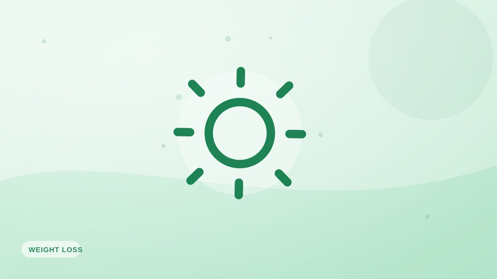

La verdad sobre el «modo supervivencia»
>¿Comer muy poco detiene la pérdida de peso? La ciencia real de la adaptación metabólica, los mitos desmontados y qué pasa de verdad cuando comes poco.

Seguro que lo has oído: «no bajas porque no comes suficiente, tu cuerpo está en modo supervivencia». Es una de las ideas más confusas del mundo de las dietas. Hay una pizca de verdad enterrada bajo mucho disparate. Vamos a separarlas.
El mito
El mito sostiene que comer muy poco hace que tu cuerpo se aferre a la grasa con tanta fuerza que dejas de perder peso por completo, o incluso ganas. El balance energético no funciona así. Si comes de verdad por debajo de tus necesidades a lo largo del tiempo, perderás peso. Los cuerpos no crean grasa de la nada.
El fenómeno real: la adaptación metabólica
Lo que sí es real es la termogénesis adaptativa. A medida que pierdes peso y llevas un tiempo a dieta, tu metabolismo se ralentiza algo: en parte porque un cuerpo más pequeño quema menos, y en parte porque tu cuerpo reduce el movimiento espontáneo y se vuelve más eficiente. Pero eso frena la pérdida; no la detiene ni la invierte.
Por qué la gente cree estar atascada
Casi siempre, una situación de «como poquísimo y no bajo» se reduce a una ingesta infraestimada —bocados olvidados, raciones calculadas por lo bajo, huecos del fin de semana— combinada con menos movimiento diario. Se siente como modo supervivencia; en realidad es un error de contabilidad más adaptación.
Qué hacer al respecto
- Registra con honestidad y precisión durante un par de semanas.
- No recortes las calorías a extremos: empeora la adaptación y la adherencia.
- Mantén la proteína alta y entrena fuerza para limitar la ralentización metabólica.
- Usa pausas puntuales en mantenimiento para aliviar la adaptación.
Un registro honesto es el antídoto contra la confusión del modo supervivencia. Fotocal hace rápido el registro preciso, para que veas lo que estás comiendo de verdad.
Ideas clave
- Comer muy poco no te hará ganar grasa: el mito es falso.
- La adaptación metabólica es real, pero solo frena la pérdida, no la detiene.
- Casi todos los casos de «atasco» son ingesta infraestimada más menos movimiento.
- Registra con honestidad, mantén la proteína alta y evita recortes extremos.